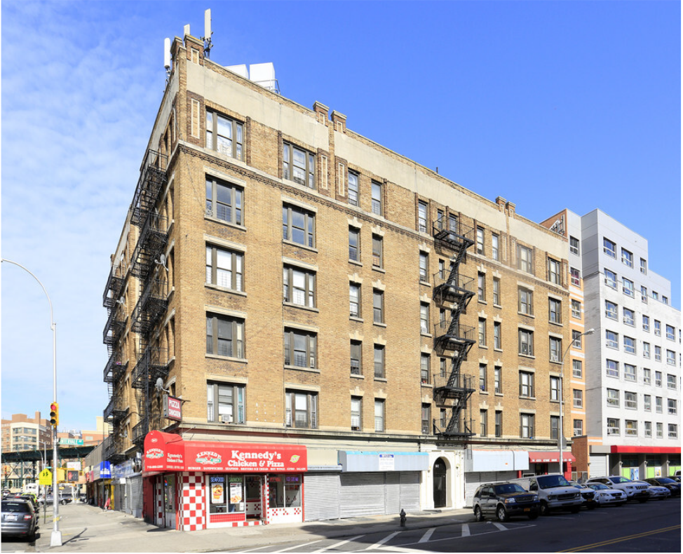

.gif)
Placeholder gif section
Since the 1979 State Supreme Court “right to shelter” mandate, homeless individuals in New York City are
guaranteed nightly housing.
In 2000, the NYC homeless population increased to 24,000, outpacing shelter capacity. Then Mayor Rudy
Giuliani began the cluster site program and intended it as a temporary solution. The city would pay for
privately owned apartments to house homeless individuals until they could be moved to other locations or
into affordable housing units.
In 2009, the number of homeless was ____ and City Comptroller Bill Thompson blasted conditions at cluster
sites in the Bronx and released an audit the following year outlining a lack of contract compliance with
shelter providers.

Following increasing complaints about the cluster sites during his tenure, new Mayor Michael Bloomberg
pledged to find a different solution beyond the cluster site model. Instead, cluster sites remained in
operation and he also began utilizing commercial hotels as shelters, also stated to be a temporary measure
at the time.
Among the largest issues with cluster sites was their lack of on-site services, security, and, most
apparently, the physical units themselves were in severe disrepair. A 2015 audit by the City of New York
Department of Investigation found that the investigated cluster sites were the worst maintained and totaled
over 200 combined violations from the Department of Buildings, Fire Department of New York, and Department
of Housing Preservation and Development. Many of them were classified as “Class-1” meaning directly
hazardous to residents.
According to that same audit, the cluster sites cost the City as much as two to three times market rate in
2013, with $28 million in expenditures for non-contracted cluster sites.
However, as the homeless population rose, so did the number of cluster sites, eventually increasing to nearly 300 by
2016. Combined with commercial hotel rooms, which were intended as another temporary measure, almost one third of
all homeless individuals were located in these housing types. The building violations in these location types made
up ___ percent of the total for all buildings within the shelter system that year.
In 2017, Mayor Bill de Blasio launched his “Turning the Tide on Homelessness” which included a number of
reforms to the shelter system, including one major reform aimed squarely at the cluster system.
“Our plan will continue to bring more people off the streets, reduce the number of shelter sites by almost
half, while strengthening services and keeping homeless New Yorkers closer to the supports they need to help
them get back on their feet,” de Blasio said in a press release at the time.
Specifically, the plan promised to “get out of” all cluster sites by 2021 and commercial hotel facilities by
2023, which, combined together for 360 sites.